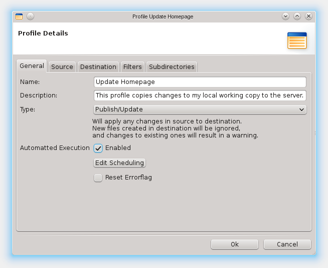

Getting Started
Lets start by creating a simple profile which updates a destination directory with changes in the source directory. For example, this is useful for updating websites on remote locations with changes that were done on the local working copy. Additionally, we will make the profile being executed at specific times.
First, you need to create a new profile. You will now see an empty
Profile Details Window.
Entering a name and an optional description, then choose the type,
for this example use Publish/Update.
Publish/Update will synchronize changes in just one direction,
from source to destination, as most of the currently provided types do.
There are currently four types:
- Publish/Update
- Backup Copy
- Exact Copy
- Two Way Sync
Now change to the Source tab, where we will use a local directory as our source,
the protocol for local files is called file.
You can use the browse button to select a directory. On the destination tab
we select a directory which will be on a FTP-Server, so change the protocol to ftp
and fill in the displayed fields. You can use the browse dialog to select the directory as usual.
Alternatively you can of course also specify a local path here, if you want to.
More about connection types
On the next tab are a few options that allow you to exclude certain files from the synchronization process. The defaults should be good enough for this example.
Now you can press "Ok" and run the profile. To additionally specify a scheduled execution, simply edit the profile and select "Edit Scheduling". If you are used to crontabs you can specify a crontab-like scheduling, or simply take the interval execution. After accepting the new scheduling, enable this profile for scheduled execution by checking the "Enabled" option and press "Ok". If you now enable the scheduler by pressing the run button in the toolbar all scheduled projects will be executed at their specific times.
Connection Types
FullSync supports different file system types as source and destination for synchronization. Currently available are the following types:
- file
- Files and Directories on your Computer.
- ftp
-
Access a remote server using ftp. Uses username and
password to authenticate.
This is typicallly used for accessing Websites. - sftp
-
Access a remote server using sftp. Uses username and
password to authenticate. May also use Public key
authentication, including keys that require a passphrase.
This is typically used to access Linux Servers. - smb
-
Access a computer using smb. Uses username and password
to authenticate. If you need to specify a domain, use
"username@domain" in the username field.
This is typically used to access Windows shares.
Rule Sets
The Simple Rule Set allows you to define a flexible set of conditions that control which files and directories will be included or excluded from the synchronization. The rules can use name, path, type, size, modification date, or age to decide if the file or directory should be considered.
Synchronization Types
You can synchronize two locations using one of the following supported types:
- Publish/Update
- This is used to update a website from a local copy to a remote server. It will apply changes to the destination but not the other way around. If a file changed in the destination a warning will be generated so it is not overwritten without your knowledge. Additional files in the destination will be ignored, deleted files in source will also be deleted on the destination. Short: FullSync creates an exact copy of the source and keeps track of what it uploaded so additional files (like generated data or config files) in destination are not affected.
- Backup Copy
- Copies all changes in the source to destination but does not delete anything in destination.
- Exact Copy
- Copies all changes in the source to destination including deletions.
- Two-Way Synchronization
-
Compares two locations and copies newer files to the other side.
BEWARE: it does not recognize changes on both sides! in this case, the older file is overwritten and changes to it are lost!
Main Window
This window is the main window of FullSync. It allows you to create, edit or delete profiles, run profiles and choose which actions should be performed, enable and disable the scheduler, edit properties and connect to other locations.

Profile Details
In the profile details you can change properties of a specific profile.

more about synchronization types

more about connection types (used in source and destination)